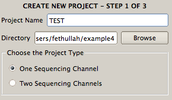
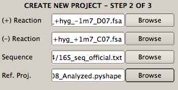
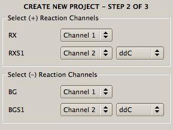

icon in the toolbar; or
icon in the toolbar; or
There are three alternative ways to create a new project to analyze SHAPE experimental data:
(1) Click New Project from the File menu;
(2) Click icon in the toolbar; or
(3) Press Ctrl-N.
A wizard will appear to guide setting up a project, which involves three steps.

In the second step, select the data files using the Browse button. Text or ABIF formatted (+) and (-) Reaction files are both acceptable. The RNA Sequence file (.txt, .seq, .fasta) or a Reference Project file (.qushape) can be selected in the same way. Then click the Next button to go to the last step.

In the final step, the channels are selected in the files. Select channels in the (+) Reaction file to specify RX and RXS1. For the sequencing ladder, the ddNTP type (ddC, ddG, ddT, ddA) must be selected in the same way that BG and BGS1 are selected in the (-) Reaction file. If there is another sequencing lane, RXS2 and BGS2 are selected in the (+) and (-) Reaction files, respectively. After specifying all the channels, press the Apply button to see the data display in the Data View window. If all selections are correct, press the Done button to proceed to the analysis. If there is a problem with specified options, use the Back button to go to the previous dialog to change the parameters.

Note that if there is a problem with specified options, use 'Back' button to go previous dialog to change previously selected parameters.
This menu open an existing project. After opening, the final processed data is shown and the applied scripts are witten to Script Inspector.
This menu save the current project.
This save the current project as a different name.
In order to save current lane as a text file, this menu is used
This menu saves the current figure as an image file.
This closes the program.